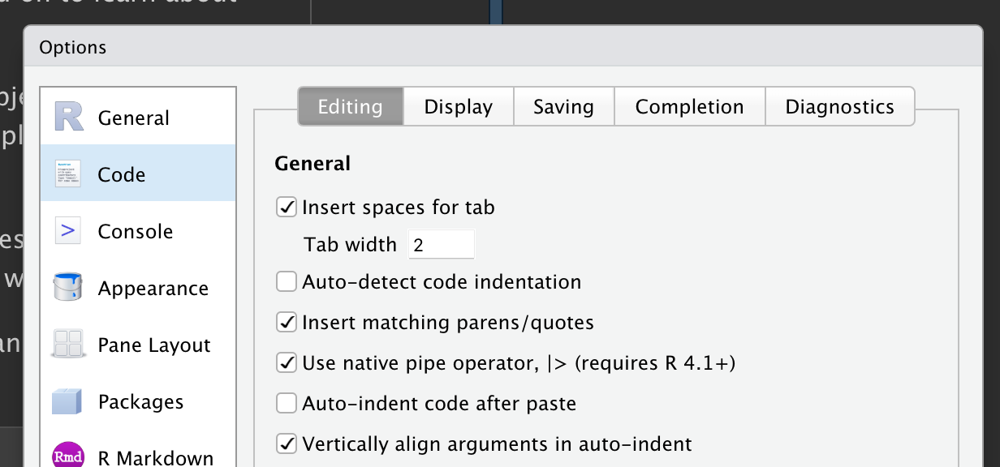

library(nycflights13)
library(tidyverse)
#> ── Attaching core tidyverse packages ───────────────────── tidyverse 2.0.0 ──
#> ✔ dplyr 1.1.4 ✔ readr 2.1.5
#> ✔ forcats 1.0.0 ✔ stringr 1.5.1
#> ✔ ggplot2 3.5.1 ✔ tibble 3.2.1
#> ✔ lubridate 1.9.3 ✔ tidyr 1.3.1
#> ✔ purrr 1.0.2
#> ── Conflicts ─────────────────────────────────────── tidyverse_conflicts() ──
#> ✖ dplyr::filter() masks stats::filter()
#> ✖ dplyr::lag() masks stats::lag()
#> ℹ Use the conflicted package (<http://conflicted.r-lib.org/>) to force all conflicts to become errorsData transformation
Introduction
Visualization is an important tool for generating insight, but it’s rare that you get the data in exactly the right form you need to make the graph you want. Often you’ll need to create some new variables or summaries to answer your questions with your data, or maybe you just want to rename the variables or reorder the observations to make the data a little easier to work with. You’ll learn how to do all that (and more!) in this chapter, which will introduce you to data transformation using the dplyr package and a new dataset on flights that departed from New York City in 2013.
The goal of this chapter is to give you an overview of all the key tools for transforming a data frame. We’ll start with functions that operate on rows and then columns of a data frame, then circle back to talk more about the pipe, an important tool that you use to combine verbs. We will then introduce the ability to work with groups. We will end the chapter with a case study that showcases these functions in action. In later chapters, we’ll return to the functions in more detail as we start to dig into specific types of data (e.g., numbers, strings, dates).
Prerequisites
In this chapter, we’ll focus on the dplyr package, another core member of the tidyverse. We’ll illustrate the key ideas using data from the nycflights13 package and use ggplot2 to help us understand the data.
Take careful note of the conflicts message that’s printed when you load the tidyverse. It tells you that dplyr overwrites some functions in base R. If you want to use the base version of these functions after loading dplyr, you’ll need to use their full names: stats::filter() and stats::lag(). So far, we’ve mostly ignored which package a function comes from because it doesn’t usually matter. However, knowing the package can help you find help and find related functions, so when we need to be precise about which package a function comes from, we’ll use the same syntax as R: packagename::functionname().
nycflights13
To explore the basic dplyr verbs, we will use nycflights13::flights. This dataset contains all 336,776 flights that departed from New York City in 2013. The data comes from the US Bureau of Transportation Statistics and is documented in ?flights.
flights
#> # A tibble: 336,776 × 19
#> year month day dep_time sched_dep_time dep_delay arr_time sched_arr_time
#> <int> <int> <int> <int> <int> <dbl> <int> <int>
#> 1 2013 1 1 517 515 2 830 819
#> 2 2013 1 1 533 529 4 850 830
#> 3 2013 1 1 542 540 2 923 850
#> 4 2013 1 1 544 545 -1 1004 1022
#> 5 2013 1 1 554 600 -6 812 837
#> 6 2013 1 1 554 558 -4 740 728
#> # ℹ 336,770 more rows
#> # ℹ 11 more variables: arr_delay <dbl>, carrier <chr>, flight <int>, …flights is a tibble, a special type of data frame used by the tidyverse to avoid some common gotchas. The most important difference between tibbles and data frames is the way tibbles print; they are designed for large datasets, so they only show the first few rows and only the columns that fit on one screen. There are a few options to see everything. If you’re using RStudio, the most convenient is probably View(flights), which opens an interactive, scrollable, and filterable view. Otherwise you can use print(flights, width = Inf) to show all columns, or use glimpse():
glimpse(flights)
#> Rows: 336,776
#> Columns: 19
#> $ year <int> 2013, 2013, 2013, 2013, 2013, 2013, 2013, 2013, 2013…
#> $ month <int> 1, 1, 1, 1, 1, 1, 1, 1, 1, 1, 1, 1, 1, 1, 1, 1, 1, 1…
#> $ day <int> 1, 1, 1, 1, 1, 1, 1, 1, 1, 1, 1, 1, 1, 1, 1, 1, 1, 1…
#> $ dep_time <int> 517, 533, 542, 544, 554, 554, 555, 557, 557, 558, 55…
#> $ sched_dep_time <int> 515, 529, 540, 545, 600, 558, 600, 600, 600, 600, 60…
#> $ dep_delay <dbl> 2, 4, 2, -1, -6, -4, -5, -3, -3, -2, -2, -2, -2, -2,…
#> $ arr_time <int> 830, 850, 923, 1004, 812, 740, 913, 709, 838, 753, 8…
#> $ sched_arr_time <int> 819, 830, 850, 1022, 837, 728, 854, 723, 846, 745, 8…
#> $ arr_delay <dbl> 11, 20, 33, -18, -25, 12, 19, -14, -8, 8, -2, -3, 7,…
#> $ carrier <chr> "UA", "UA", "AA", "B6", "DL", "UA", "B6", "EV", "B6"…
#> $ flight <int> 1545, 1714, 1141, 725, 461, 1696, 507, 5708, 79, 301…
#> $ tailnum <chr> "N14228", "N24211", "N619AA", "N804JB", "N668DN", "N…
#> $ origin <chr> "EWR", "LGA", "JFK", "JFK", "LGA", "EWR", "EWR", "LG…
#> $ dest <chr> "IAH", "IAH", "MIA", "BQN", "ATL", "ORD", "FLL", "IA…
#> $ air_time <dbl> 227, 227, 160, 183, 116, 150, 158, 53, 140, 138, 149…
#> $ distance <dbl> 1400, 1416, 1089, 1576, 762, 719, 1065, 229, 944, 73…
#> $ hour <dbl> 5, 5, 5, 5, 6, 5, 6, 6, 6, 6, 6, 6, 6, 6, 6, 5, 6, 6…
#> $ minute <dbl> 15, 29, 40, 45, 0, 58, 0, 0, 0, 0, 0, 0, 0, 0, 0, 59…
#> $ time_hour <dttm> 2013-01-01 05:00:00, 2013-01-01 05:00:00, 2013-01-0…In both views, the variable names are followed by abbreviations that tell you the type of each variable: <int> is short for integer, <dbl> is short for double (aka real numbers), <chr> for character (aka strings), and <dttm> for date-time. These are important because the operations you can perform on a column depend heavily on its “type.”
dplyr basics
You’re about to learn the primary dplyr verbs (functions), which will allow you to solve the vast majority of your data manipulation challenges. But before we discuss their individual differences, it’s worth stating what they have in common:
The first argument is always a data frame.
The subsequent arguments typically describe which columns to operate on using the variable names (without quotes).
The output is always a new data frame.
Because each verb does one thing well, solving complex problems will usually require combining multiple verbs, and we’ll do so with the pipe, |>. We’ll discuss the pipe more in Section 1.4, but in brief, the pipe takes the thing on its left and passes it along to the function on its right so that x |> f(y) is equivalent to f(x, y), and x |> f(y) |> g(z) is equivalent to g(f(x, y), z). The easiest way to pronounce the pipe is “then”. That makes it possible to get a sense of the following code even though you haven’t yet learned the details:
flights |>
filter(dest == "IAH") |>
group_by(year, month, day) |>
summarize(
arr_delay = mean(arr_delay, na.rm = TRUE)
)dplyr’s verbs are organized into four groups based on what they operate on: rows, columns, groups, or tables. In the following sections, you’ll learn the most important verbs for rows, columns, and groups. Then, we’ll return to the join verbs that work on tables in ?@sec-joins. Let’s dive in!
Rows
The most important verbs that operate on rows of a dataset are filter(), which changes which rows are present without changing their order, and arrange(), which changes the order of the rows without changing which are present. Both functions only affect the rows, and the columns are left unchanged. We’ll also discuss distinct() which finds rows with unique values. Unlike arrange() and filter() it can also optionally modify the columns.
filter()
filter() allows you to keep rows based on the values of the columns1. The first argument is the data frame. The second and subsequent arguments are the conditions that must be true to keep the row. For example, we could find all flights that departed more than 120 minutes (two hours) late:
flights |>
filter(dep_delay > 120)
#> # A tibble: 9,723 × 19
#> year month day dep_time sched_dep_time dep_delay arr_time sched_arr_time
#> <int> <int> <int> <int> <int> <dbl> <int> <int>
#> 1 2013 1 1 848 1835 853 1001 1950
#> 2 2013 1 1 957 733 144 1056 853
#> 3 2013 1 1 1114 900 134 1447 1222
#> 4 2013 1 1 1540 1338 122 2020 1825
#> 5 2013 1 1 1815 1325 290 2120 1542
#> 6 2013 1 1 1842 1422 260 1958 1535
#> # ℹ 9,717 more rows
#> # ℹ 11 more variables: arr_delay <dbl>, carrier <chr>, flight <int>, …As well as > (greater than), you can use >= (greater than or equal to), < (less than), <= (less than or equal to), == (equal to), and != (not equal to). You can also combine conditions with & or , to indicate “and” (check for both conditions) or with | to indicate “or” (check for either condition):
# Flights that departed on January 1
flights |>
filter(month == 1 & day == 1)
#> # A tibble: 842 × 19
#> year month day dep_time sched_dep_time dep_delay arr_time sched_arr_time
#> <int> <int> <int> <int> <int> <dbl> <int> <int>
#> 1 2013 1 1 517 515 2 830 819
#> 2 2013 1 1 533 529 4 850 830
#> 3 2013 1 1 542 540 2 923 850
#> 4 2013 1 1 544 545 -1 1004 1022
#> 5 2013 1 1 554 600 -6 812 837
#> 6 2013 1 1 554 558 -4 740 728
#> # ℹ 836 more rows
#> # ℹ 11 more variables: arr_delay <dbl>, carrier <chr>, flight <int>, …
# Flights that departed in January or February
flights |>
filter(month == 1 | month == 2)
#> # A tibble: 51,955 × 19
#> year month day dep_time sched_dep_time dep_delay arr_time sched_arr_time
#> <int> <int> <int> <int> <int> <dbl> <int> <int>
#> 1 2013 1 1 517 515 2 830 819
#> 2 2013 1 1 533 529 4 850 830
#> 3 2013 1 1 542 540 2 923 850
#> 4 2013 1 1 544 545 -1 1004 1022
#> 5 2013 1 1 554 600 -6 812 837
#> 6 2013 1 1 554 558 -4 740 728
#> # ℹ 51,949 more rows
#> # ℹ 11 more variables: arr_delay <dbl>, carrier <chr>, flight <int>, …There’s a useful shortcut when you’re combining | and ==: %in%. It keeps rows where the variable equals one of the values on the right:
# A shorter way to select flights that departed in January or February
flights |>
filter(month %in% c(1, 2))
#> # A tibble: 51,955 × 19
#> year month day dep_time sched_dep_time dep_delay arr_time sched_arr_time
#> <int> <int> <int> <int> <int> <dbl> <int> <int>
#> 1 2013 1 1 517 515 2 830 819
#> 2 2013 1 1 533 529 4 850 830
#> 3 2013 1 1 542 540 2 923 850
#> 4 2013 1 1 544 545 -1 1004 1022
#> 5 2013 1 1 554 600 -6 812 837
#> 6 2013 1 1 554 558 -4 740 728
#> # ℹ 51,949 more rows
#> # ℹ 11 more variables: arr_delay <dbl>, carrier <chr>, flight <int>, …We’ll come back to these comparisons and logical operators in more detail in ?@sec-logicals.
When you run filter() dplyr executes the filtering operation, creating a new data frame, and then prints it. It doesn’t modify the existing flights dataset because dplyr functions never modify their inputs. To save the result, you need to use the assignment operator, <-:
jan1 <- flights |>
filter(month == 1 & day == 1)Common mistakes
When you’re starting out with R, the easiest mistake to make is to use = instead of == when testing for equality. filter() will let you know when this happens:
flights |>
filter(month = 1)
#> Error in `filter()`:
#> ! We detected a named input.
#> ℹ This usually means that you've used `=` instead of `==`.
#> ℹ Did you mean `month == 1`?Another mistakes is you write “or” statements like you would in English:
flights |>
filter(month == 1 | 2)This “works”, in the sense that it doesn’t throw an error, but it doesn’t do what you want because | first checks the condition month == 1 and then checks the condition 2, which is not a sensible condition to check. We’ll learn more about what’s happening here and why in ?@sec-order-operations-boolean.
arrange()
arrange() changes the order of the rows based on the value of the columns. It takes a data frame and a set of column names (or more complicated expressions) to order by. If you provide more than one column name, each additional column will be used to break ties in the values of the preceding columns. For example, the following code sorts by the departure time, which is spread over four columns. We get the earliest years first, then within a year, the earliest months, etc.
flights |>
arrange(year, month, day, dep_time)
#> # A tibble: 336,776 × 19
#> year month day dep_time sched_dep_time dep_delay arr_time sched_arr_time
#> <int> <int> <int> <int> <int> <dbl> <int> <int>
#> 1 2013 1 1 517 515 2 830 819
#> 2 2013 1 1 533 529 4 850 830
#> 3 2013 1 1 542 540 2 923 850
#> 4 2013 1 1 544 545 -1 1004 1022
#> 5 2013 1 1 554 600 -6 812 837
#> 6 2013 1 1 554 558 -4 740 728
#> # ℹ 336,770 more rows
#> # ℹ 11 more variables: arr_delay <dbl>, carrier <chr>, flight <int>, …You can use desc() on a column inside of arrange() to re-order the data frame based on that column in descending (big-to-small) order. For example, this code orders flights from most to least delayed:
flights |>
arrange(desc(dep_delay))
#> # A tibble: 336,776 × 19
#> year month day dep_time sched_dep_time dep_delay arr_time sched_arr_time
#> <int> <int> <int> <int> <int> <dbl> <int> <int>
#> 1 2013 1 9 641 900 1301 1242 1530
#> 2 2013 6 15 1432 1935 1137 1607 2120
#> 3 2013 1 10 1121 1635 1126 1239 1810
#> 4 2013 9 20 1139 1845 1014 1457 2210
#> 5 2013 7 22 845 1600 1005 1044 1815
#> 6 2013 4 10 1100 1900 960 1342 2211
#> # ℹ 336,770 more rows
#> # ℹ 11 more variables: arr_delay <dbl>, carrier <chr>, flight <int>, …Note that the number of rows has not changed – we’re only arranging the data, we’re not filtering it.
distinct()
distinct() finds all the unique rows in a dataset, so technically, it primarily operates on the rows. Most of the time, however, you’ll want the distinct combination of some variables, so you can also optionally supply column names:
# Remove duplicate rows, if any
flights |>
distinct()
#> # A tibble: 336,776 × 19
#> year month day dep_time sched_dep_time dep_delay arr_time sched_arr_time
#> <int> <int> <int> <int> <int> <dbl> <int> <int>
#> 1 2013 1 1 517 515 2 830 819
#> 2 2013 1 1 533 529 4 850 830
#> 3 2013 1 1 542 540 2 923 850
#> 4 2013 1 1 544 545 -1 1004 1022
#> 5 2013 1 1 554 600 -6 812 837
#> 6 2013 1 1 554 558 -4 740 728
#> # ℹ 336,770 more rows
#> # ℹ 11 more variables: arr_delay <dbl>, carrier <chr>, flight <int>, …
# Find all unique origin and destination pairs
flights |>
distinct(origin, dest)
#> # A tibble: 224 × 2
#> origin dest
#> <chr> <chr>
#> 1 EWR IAH
#> 2 LGA IAH
#> 3 JFK MIA
#> 4 JFK BQN
#> 5 LGA ATL
#> 6 EWR ORD
#> # ℹ 218 more rowsAlternatively, if you want to keep other columns when filtering for unique rows, you can use the .keep_all = TRUE option.
flights |>
distinct(origin, dest, .keep_all = TRUE)
#> # A tibble: 224 × 19
#> year month day dep_time sched_dep_time dep_delay arr_time sched_arr_time
#> <int> <int> <int> <int> <int> <dbl> <int> <int>
#> 1 2013 1 1 517 515 2 830 819
#> 2 2013 1 1 533 529 4 850 830
#> 3 2013 1 1 542 540 2 923 850
#> 4 2013 1 1 544 545 -1 1004 1022
#> 5 2013 1 1 554 600 -6 812 837
#> 6 2013 1 1 554 558 -4 740 728
#> # ℹ 218 more rows
#> # ℹ 11 more variables: arr_delay <dbl>, carrier <chr>, flight <int>, …It’s not a coincidence that all of these distinct flights are on January 1: distinct() will find the first occurrence of a unique row in the dataset and discard the rest.
If you want to find the number of occurrences instead, you’re better off swapping distinct() for count(). With the sort = TRUE argument, you can arrange them in descending order of the number of occurrences. You’ll learn more about count in ?@sec-counts.
flights |>
count(origin, dest, sort = TRUE)
#> # A tibble: 224 × 3
#> origin dest n
#> <chr> <chr> <int>
#> 1 JFK LAX 11262
#> 2 LGA ATL 10263
#> 3 LGA ORD 8857
#> 4 JFK SFO 8204
#> 5 LGA CLT 6168
#> 6 EWR ORD 6100
#> # ℹ 218 more rowsExercises
In a single pipeline for each condition, find all flights that meet the condition:
- Had an arrival delay of two or more hours
- Flew to Houston (
IAHorHOU) - Were operated by United, American, or Delta
- Departed in summer (July, August, and September)
- Arrived more than two hours late but didn’t leave late
- Were delayed by at least an hour, but made up over 30 minutes in flight
Sort
flightsto find the flights with the longest departure delays. Find the flights that left earliest in the morning.Sort
flightsto find the fastest flights. (Hint: Try including a math calculation inside of your function.)Was there a flight on every day of 2013?
Which flights traveled the farthest distance? Which traveled the least distance?
Does it matter what order you used
filter()andarrange()if you’re using both? Why/why not? Think about the results and how much work the functions would have to do.
Columns
There are four important verbs that affect the columns without changing the rows: mutate() creates new columns that are derived from the existing columns, select() changes which columns are present, rename() changes the names of the columns, and relocate() changes the positions of the columns.
mutate()
The job of mutate() is to add new columns that are calculated from the existing columns. In the transform chapters, you’ll learn a large set of functions that you can use to manipulate different types of variables. For now, we’ll stick with basic algebra, which allows us to compute the gain, how much time a delayed flight made up in the air, and the speed in miles per hour:
flights |>
mutate(
gain = dep_delay - arr_delay,
speed = distance / air_time * 60
)
#> # A tibble: 336,776 × 21
#> year month day dep_time sched_dep_time dep_delay arr_time sched_arr_time
#> <int> <int> <int> <int> <int> <dbl> <int> <int>
#> 1 2013 1 1 517 515 2 830 819
#> 2 2013 1 1 533 529 4 850 830
#> 3 2013 1 1 542 540 2 923 850
#> 4 2013 1 1 544 545 -1 1004 1022
#> 5 2013 1 1 554 600 -6 812 837
#> 6 2013 1 1 554 558 -4 740 728
#> # ℹ 336,770 more rows
#> # ℹ 13 more variables: arr_delay <dbl>, carrier <chr>, flight <int>, …By default, mutate() adds new columns on the right-hand side of your dataset, which makes it difficult to see what’s happening here. We can use the .before argument to instead add the variables to the left-hand side2:
flights |>
mutate(
gain = dep_delay - arr_delay,
speed = distance / air_time * 60,
.before = 1
)
#> # A tibble: 336,776 × 21
#> gain speed year month day dep_time sched_dep_time dep_delay arr_time
#> <dbl> <dbl> <int> <int> <int> <int> <int> <dbl> <int>
#> 1 -9 370. 2013 1 1 517 515 2 830
#> 2 -16 374. 2013 1 1 533 529 4 850
#> 3 -31 408. 2013 1 1 542 540 2 923
#> 4 17 517. 2013 1 1 544 545 -1 1004
#> 5 19 394. 2013 1 1 554 600 -6 812
#> 6 -16 288. 2013 1 1 554 558 -4 740
#> # ℹ 336,770 more rows
#> # ℹ 12 more variables: sched_arr_time <int>, arr_delay <dbl>, …The . indicates that .before is an argument to the function, not the name of a third new variable we are creating. You can also use .after to add after a variable, and in both .before and .after you can use the variable name instead of a position. For example, we could add the new variables after day:
flights |>
mutate(
gain = dep_delay - arr_delay,
speed = distance / air_time * 60,
.after = day
)Alternatively, you can control which variables are kept with the .keep argument. A particularly useful argument is "used" which specifies that we only keep the columns that were involved or created in the mutate() step. For example, the following output will contain only the variables dep_delay, arr_delay, air_time, gain, hours, and gain_per_hour.
flights |>
mutate(
gain = dep_delay - arr_delay,
hours = air_time / 60,
gain_per_hour = gain / hours,
.keep = "used"
)Note that since we haven’t assigned the result of the above computation back to flights, the new variables gain, hours, and gain_per_hour will only be printed but will not be stored in a data frame. And if we want them to be available in a data frame for future use, we should think carefully about whether we want the result to be assigned back to flights, overwriting the original data frame with many more variables, or to a new object. Often, the right answer is a new object that is named informatively to indicate its contents, e.g., delay_gain, but you might also have good reasons for overwriting flights.
select()
It’s not uncommon to get datasets with hundreds or even thousands of variables. In this situation, the first challenge is often just focusing on the variables you’re interested in. select() allows you to rapidly zoom in on a useful subset using operations based on the names of the variables:
Select columns by name:
flights |> select(year, month, day)Select all columns between year and day (inclusive):
flights |> select(year:day)Select all columns except those from year to day (inclusive):
flights |> select(!year:day)Historically this operation was done with
-instead of!, so you’re likely to see that in the wild. These two operators serve the same purpose but with subtle differences in behavior. We recommend using!because it reads as “not” and combines well with&and|.Select all columns that are characters:
flights |> select(where(is.character))
There are a number of helper functions you can use within select():
starts_with("abc"): matches names that begin with “abc”.ends_with("xyz"): matches names that end with “xyz”.contains("ijk"): matches names that contain “ijk”.num_range("x", 1:3): matchesx1,x2andx3.
See ?select for more details. Once you know regular expressions (the topic of ?@sec-regular-expressions) you’ll also be able to use matches() to select variables that match a pattern.
You can rename variables as you select() them by using =. The new name appears on the left-hand side of the =, and the old variable appears on the right-hand side:
flights |>
select(tail_num = tailnum)
#> # A tibble: 336,776 × 1
#> tail_num
#> <chr>
#> 1 N14228
#> 2 N24211
#> 3 N619AA
#> 4 N804JB
#> 5 N668DN
#> 6 N39463
#> # ℹ 336,770 more rowsrename()
If you want to keep all the existing variables and just want to rename a few, you can use rename() instead of select():
flights |>
rename(tail_num = tailnum)
#> # A tibble: 336,776 × 19
#> year month day dep_time sched_dep_time dep_delay arr_time sched_arr_time
#> <int> <int> <int> <int> <int> <dbl> <int> <int>
#> 1 2013 1 1 517 515 2 830 819
#> 2 2013 1 1 533 529 4 850 830
#> 3 2013 1 1 542 540 2 923 850
#> 4 2013 1 1 544 545 -1 1004 1022
#> 5 2013 1 1 554 600 -6 812 837
#> 6 2013 1 1 554 558 -4 740 728
#> # ℹ 336,770 more rows
#> # ℹ 11 more variables: arr_delay <dbl>, carrier <chr>, flight <int>, …If you have a bunch of inconsistently named columns and it would be painful to fix them all by hand, check out janitor::clean_names() which provides some useful automated cleaning.
relocate()
Use relocate() to move variables around. You might want to collect related variables together or move important variables to the front. By default relocate() moves variables to the front:
flights |>
relocate(time_hour, air_time)
#> # A tibble: 336,776 × 19
#> time_hour air_time year month day dep_time sched_dep_time
#> <dttm> <dbl> <int> <int> <int> <int> <int>
#> 1 2013-01-01 05:00:00 227 2013 1 1 517 515
#> 2 2013-01-01 05:00:00 227 2013 1 1 533 529
#> 3 2013-01-01 05:00:00 160 2013 1 1 542 540
#> 4 2013-01-01 05:00:00 183 2013 1 1 544 545
#> 5 2013-01-01 06:00:00 116 2013 1 1 554 600
#> 6 2013-01-01 05:00:00 150 2013 1 1 554 558
#> # ℹ 336,770 more rows
#> # ℹ 12 more variables: dep_delay <dbl>, arr_time <int>, …You can also specify where to put them using the .before and .after arguments, just like in mutate():
flights |>
relocate(year:dep_time, .after = time_hour)
flights |>
relocate(starts_with("arr"), .before = dep_time)Exercises
Compare
dep_time,sched_dep_time, anddep_delay. How would you expect those three numbers to be related?Brainstorm as many ways as possible to select
dep_time,dep_delay,arr_time, andarr_delayfromflights.What happens if you specify the name of the same variable multiple times in a
select()call?What does the
any_of()function do? Why might it be helpful in conjunction with this vector?variables <- c("year", "month", "day", "dep_delay", "arr_delay")Does the result of running the following code surprise you? How do the select helpers deal with upper and lower case by default? How can you change that default?
flights |> select(contains("TIME"))Rename
air_timetoair_time_minto indicate units of measurement and move it to the beginning of the data frame.Why doesn’t the following work, and what does the error mean?
flights |> select(tailnum) |> arrange(arr_delay) #> Error in `arrange()`: #> ℹ In argument: `..1 = arr_delay`. #> Caused by error: #> ! オブジェクト 'arr_delay' がありません
The pipe
We’ve shown you simple examples of the pipe above, but its real power arises when you start to combine multiple verbs. For example, imagine that you wanted to find the fastest flights to Houston’s IAH airport: you need to combine filter(), mutate(), select(), and arrange():
flights |>
filter(dest == "IAH") |>
mutate(speed = distance / air_time * 60) |>
select(year:day, dep_time, carrier, flight, speed) |>
arrange(desc(speed))
#> # A tibble: 7,198 × 7
#> year month day dep_time carrier flight speed
#> <int> <int> <int> <int> <chr> <int> <dbl>
#> 1 2013 7 9 707 UA 226 522.
#> 2 2013 8 27 1850 UA 1128 521.
#> 3 2013 8 28 902 UA 1711 519.
#> 4 2013 8 28 2122 UA 1022 519.
#> 5 2013 6 11 1628 UA 1178 515.
#> 6 2013 8 27 1017 UA 333 515.
#> # ℹ 7,192 more rowsEven though this pipeline has four steps, it’s easy to skim because the verbs come at the start of each line: start with the flights data, then filter, then mutate, then select, then arrange.
What would happen if we didn’t have the pipe? We could nest each function call inside the previous call:
arrange(
select(
mutate(
filter(
flights,
dest == "IAH"
),
speed = distance / air_time * 60
),
year:day, dep_time, carrier, flight, speed
),
desc(speed)
)Or we could use a bunch of intermediate objects:
flights1 <- filter(flights, dest == "IAH")
flights2 <- mutate(flights1, speed = distance / air_time * 60)
flights3 <- select(flights2, year:day, dep_time, carrier, flight, speed)
arrange(flights3, desc(speed))While both forms have their time and place, the pipe generally produces data analysis code that is easier to write and read.
To add the pipe to your code, we recommend using the built-in keyboard shortcut Ctrl/Cmd + Shift + M. You’ll need to make one change to your RStudio options to use |> instead of %>% as shown in Figure 1; more on %>% shortly.

|>, make sure the “Use native pipe operator” option is checked.
magrittr
If you’ve been using the tidyverse for a while, you might be familiar with the %>% pipe provided by the magrittr package. The magrittr package is included in the core tidyverse, so you can use %>% whenever you load the tidyverse:
library(tidyverse)
mtcars %>%
group_by(cyl) %>%
summarize(n = n())For simple cases, |> and %>% behave identically. So why do we recommend the base pipe? Firstly, because it’s part of base R, it’s always available for you to use, even when you’re not using the tidyverse. Secondly, |> is quite a bit simpler than %>%: in the time between the invention of %>% in 2014 and the inclusion of |> in R 4.1.0 in 2021, we gained a better understanding of the pipe. This allowed the base implementation to jettison infrequently used and less important features.
Groups
So far you’ve learned about functions that work with rows and columns. dplyr gets even more powerful when you add in the ability to work with groups. In this section, we’ll focus on the most important functions: group_by(), summarize(), and the slice family of functions.
group_by()
Use group_by() to divide your dataset into groups meaningful for your analysis:
flights |>
group_by(month)
#> # A tibble: 336,776 × 19
#> # Groups: month [12]
#> year month day dep_time sched_dep_time dep_delay arr_time sched_arr_time
#> <int> <int> <int> <int> <int> <dbl> <int> <int>
#> 1 2013 1 1 517 515 2 830 819
#> 2 2013 1 1 533 529 4 850 830
#> 3 2013 1 1 542 540 2 923 850
#> 4 2013 1 1 544 545 -1 1004 1022
#> 5 2013 1 1 554 600 -6 812 837
#> 6 2013 1 1 554 558 -4 740 728
#> # ℹ 336,770 more rows
#> # ℹ 11 more variables: arr_delay <dbl>, carrier <chr>, flight <int>, …group_by() doesn’t change the data but, if you look closely at the output, you’ll notice that the output indicates that it is “grouped by” month (Groups: month [12]). This means subsequent operations will now work “by month”. group_by() adds this grouped feature (referred to as class) to the data frame, which changes the behavior of the subsequent verbs applied to the data.
summarize()
The most important grouped operation is a summary, which, if being used to calculate a single summary statistic, reduces the data frame to have a single row for each group. In dplyr, this operation is performed by summarize()3, as shown by the following example, which computes the average departure delay by month:
flights |>
group_by(month) |>
summarize(
avg_delay = mean(dep_delay)
)
#> # A tibble: 12 × 2
#> month avg_delay
#> <int> <dbl>
#> 1 1 NA
#> 2 2 NA
#> 3 3 NA
#> 4 4 NA
#> 5 5 NA
#> 6 6 NA
#> # ℹ 6 more rowsUh-oh! Something has gone wrong, and all of our results are NAs (pronounced “N-A”), R’s symbol for missing value. This happened because some of the observed flights had missing data in the delay column, and so when we calculated the mean including those values, we got an NA result. We’ll come back to discuss missing values in detail in ?@sec-missing-values, but for now, we’ll tell the mean() function to ignore all missing values by setting the argument na.rm to TRUE:
flights |>
group_by(month) |>
summarize(
avg_delay = mean(dep_delay, na.rm = TRUE)
)
#> # A tibble: 12 × 2
#> month avg_delay
#> <int> <dbl>
#> 1 1 10.0
#> 2 2 10.8
#> 3 3 13.2
#> 4 4 13.9
#> 5 5 13.0
#> 6 6 20.8
#> # ℹ 6 more rowsYou can create any number of summaries in a single call to summarize(). You’ll learn various useful summaries in the upcoming chapters, but one very useful summary is n(), which returns the number of rows in each group:
flights |>
group_by(month) |>
summarize(
avg_delay = mean(dep_delay, na.rm = TRUE),
n = n()
)
#> # A tibble: 12 × 3
#> month avg_delay n
#> <int> <dbl> <int>
#> 1 1 10.0 27004
#> 2 2 10.8 24951
#> 3 3 13.2 28834
#> 4 4 13.9 28330
#> 5 5 13.0 28796
#> 6 6 20.8 28243
#> # ℹ 6 more rowsMeans and counts can get you a surprisingly long way in data science!
The slice_ functions
There are five handy functions that allow you to extract specific rows within each group:
df |> slice_head(n = 1)takes the first row from each group.df |> slice_tail(n = 1)takes the last row in each group.df |> slice_min(x, n = 1)takes the row with the smallest value of columnx.df |> slice_max(x, n = 1)takes the row with the largest value of columnx.df |> slice_sample(n = 1)takes one random row.
You can vary n to select more than one row, or instead of n =, you can use prop = 0.1 to select (e.g.) 10% of the rows in each group. For example, the following code finds the flights that are most delayed upon arrival at each destination:
flights |>
group_by(dest) |>
slice_max(arr_delay, n = 1) |>
relocate(dest)
#> # A tibble: 108 × 19
#> # Groups: dest [105]
#> dest year month day dep_time sched_dep_time dep_delay arr_time
#> <chr> <int> <int> <int> <int> <int> <dbl> <int>
#> 1 ABQ 2013 7 22 2145 2007 98 132
#> 2 ACK 2013 7 23 1139 800 219 1250
#> 3 ALB 2013 1 25 123 2000 323 229
#> 4 ANC 2013 8 17 1740 1625 75 2042
#> 5 ATL 2013 7 22 2257 759 898 121
#> 6 AUS 2013 7 10 2056 1505 351 2347
#> # ℹ 102 more rows
#> # ℹ 11 more variables: sched_arr_time <int>, arr_delay <dbl>, …Note that there are 105 destinations but we get 108 rows here. What’s up? slice_min() and slice_max() keep tied values so n = 1 means give us all rows with the highest value. If you want exactly one row per group you can set with_ties = FALSE.
This is similar to computing the max delay with summarize(), but you get the whole corresponding row (or rows if there’s a tie) instead of the single summary statistic.
Grouping by multiple variables
You can create groups using more than one variable. For example, we could make a group for each date.
daily <- flights |>
group_by(year, month, day)
daily
#> # A tibble: 336,776 × 19
#> # Groups: year, month, day [365]
#> year month day dep_time sched_dep_time dep_delay arr_time sched_arr_time
#> <int> <int> <int> <int> <int> <dbl> <int> <int>
#> 1 2013 1 1 517 515 2 830 819
#> 2 2013 1 1 533 529 4 850 830
#> 3 2013 1 1 542 540 2 923 850
#> 4 2013 1 1 544 545 -1 1004 1022
#> 5 2013 1 1 554 600 -6 812 837
#> 6 2013 1 1 554 558 -4 740 728
#> # ℹ 336,770 more rows
#> # ℹ 11 more variables: arr_delay <dbl>, carrier <chr>, flight <int>, …When you summarize a tibble grouped by more than one variable, each summary peels off the last group. In hindsight, this wasn’t a great way to make this function work, but it’s difficult to change without breaking existing code. To make it obvious what’s happening, dplyr displays a message that tells you how you can change this behavior:
daily_flights <- daily |>
summarize(n = n())
#> `summarise()` has grouped output by 'year', 'month'. You can override using
#> the `.groups` argument.If you’re happy with this behavior, you can explicitly request it in order to suppress the message:
daily_flights <- daily |>
summarize(
n = n(),
.groups = "drop_last"
)Alternatively, change the default behavior by setting a different value, e.g., "drop" to drop all grouping or "keep" to preserve the same groups.
Ungrouping
You might also want to remove grouping from a data frame without using summarize(). You can do this with ungroup().
daily |>
ungroup()
#> # A tibble: 336,776 × 19
#> year month day dep_time sched_dep_time dep_delay arr_time sched_arr_time
#> <int> <int> <int> <int> <int> <dbl> <int> <int>
#> 1 2013 1 1 517 515 2 830 819
#> 2 2013 1 1 533 529 4 850 830
#> 3 2013 1 1 542 540 2 923 850
#> 4 2013 1 1 544 545 -1 1004 1022
#> 5 2013 1 1 554 600 -6 812 837
#> 6 2013 1 1 554 558 -4 740 728
#> # ℹ 336,770 more rows
#> # ℹ 11 more variables: arr_delay <dbl>, carrier <chr>, flight <int>, …Now let’s see what happens when you summarize an ungrouped data frame.
daily |>
ungroup() |>
summarize(
avg_delay = mean(dep_delay, na.rm = TRUE),
flights = n()
)
#> # A tibble: 1 × 2
#> avg_delay flights
#> <dbl> <int>
#> 1 12.6 336776You get a single row back because dplyr treats all the rows in an ungrouped data frame as belonging to one group.
.by
dplyr 1.1.0 includes a new, experimental, syntax for per-operation grouping, the .by argument. group_by() and ungroup() aren’t going away, but you can now also use the .by argument to group within a single operation:
flights |>
summarize(
delay = mean(dep_delay, na.rm = TRUE),
n = n(),
.by = month
)Or if you want to group by multiple variables:
flights |>
summarize(
delay = mean(dep_delay, na.rm = TRUE),
n = n(),
.by = c(origin, dest)
).by works with all verbs and has the advantage that you don’t need to use the .groups argument to suppress the grouping message or ungroup() when you’re done.
We didn’t focus on this syntax in this chapter because it was very new when we wrote the book. We did want to mention it because we think it has a lot of promise and it’s likely to be quite popular. You can learn more about it in the dplyr 1.1.0 blog post.
Exercises
Which carrier has the worst average delays? Challenge: can you disentangle the effects of bad airports vs. bad carriers? Why/why not? (Hint: think about
flights |> group_by(carrier, dest) |> summarize(n()))Find the flights that are most delayed upon departure from each destination.
How do delays vary over the course of the day? Illustrate your answer with a plot.
What happens if you supply a negative
ntoslice_min()and friends?Explain what
count()does in terms of the dplyr verbs you just learned. What does thesortargument tocount()do?Suppose we have the following tiny data frame:
df <- tibble( x = 1:5, y = c("a", "b", "a", "a", "b"), z = c("K", "K", "L", "L", "K") )Write down what you think the output will look like, then check if you were correct, and describe what
group_by()does.df |> group_by(y)Write down what you think the output will look like, then check if you were correct, and describe what
arrange()does. Also, comment on how it’s different from thegroup_by()in part (a).df |> arrange(y)Write down what you think the output will look like, then check if you were correct, and describe what the pipeline does.
df |> group_by(y) |> summarize(mean_x = mean(x))Write down what you think the output will look like, then check if you were correct, and describe what the pipeline does. Then, comment on what the message says.
df |> group_by(y, z) |> summarize(mean_x = mean(x))Write down what you think the output will look like, then check if you were correct, and describe what the pipeline does. How is the output different from the one in part (d)?
df |> group_by(y, z) |> summarize(mean_x = mean(x), .groups = "drop")Write down what you think the outputs will look like, then check if you were correct, and describe what each pipeline does. How are the outputs of the two pipelines different?
df |> group_by(y, z) |> summarize(mean_x = mean(x)) df |> group_by(y, z) |> mutate(mean_x = mean(x))
Case study: aggregates and sample size
Whenever you do any aggregation, it’s always a good idea to include a count (n()). That way, you can ensure that you’re not drawing conclusions based on very small amounts of data. We’ll demonstrate this with some baseball data from the Lahman package. Specifically, we will compare what proportion of times a player gets a hit (H) vs. the number of times they try to put the ball in play (AB):
batters <- Lahman::Batting |>
group_by(playerID) |>
summarize(
performance = sum(H, na.rm = TRUE) / sum(AB, na.rm = TRUE),
n = sum(AB, na.rm = TRUE)
)
batters
#> # A tibble: 20,730 × 3
#> playerID performance n
#> <chr> <dbl> <int>
#> 1 aardsda01 0 4
#> 2 aaronha01 0.305 12364
#> 3 aaronto01 0.229 944
#> 4 aasedo01 0 5
#> 5 abadan01 0.0952 21
#> 6 abadfe01 0.111 9
#> # ℹ 20,724 more rowsWhen we plot the skill of the batter (measured by the batting average, performance) against the number of opportunities to hit the ball (measured by times at bat, n), you see two patterns:
The variation in
performanceis larger among players with fewer at-bats. The shape of this plot is very characteristic: whenever you plot a mean (or other summary statistics) vs. group size, you’ll see that the variation decreases as the sample size increases4.There’s a positive correlation between skill (
performance) and opportunities to hit the ball (n) because teams want to give their best batters the most opportunities to hit the ball.
batters |>
filter(n > 100) |>
ggplot(aes(x = n, y = performance)) +
geom_point(alpha = 1 / 10) +
geom_smooth(se = FALSE)
Note the handy pattern for combining ggplot2 and dplyr. You just have to remember to switch from |>, for dataset processing, to + for adding layers to your plot.
This also has important implications for ranking. If you naively sort on desc(performance), the people with the best batting averages are clearly the ones who tried to put the ball in play very few times and happened to get a hit, they’re not necessarily the most skilled players:
batters |>
arrange(desc(performance))
#> # A tibble: 20,730 × 3
#> playerID performance n
#> <chr> <dbl> <int>
#> 1 abramge01 1 1
#> 2 alberan01 1 1
#> 3 banisje01 1 1
#> 4 bartocl01 1 1
#> 5 bassdo01 1 1
#> 6 birasst01 1 2
#> # ℹ 20,724 more rowsYou can find a good explanation of this problem and how to overcome it at http://varianceexplained.org/r/empirical_bayes_baseball/ and https://www.evanmiller.org/how-not-to-sort-by-average-rating.html.
Summary
In this chapter, you’ve learned the tools that dplyr provides for working with data frames. The tools are roughly grouped into three categories: those that manipulate the rows (like filter() and arrange()), those that manipulate the columns (like select() and mutate()) and those that manipulate groups (like group_by() and summarize()). In this chapter, we’ve focused on these “whole data frame” tools, but you haven’t yet learned much about what you can do with the individual variable. We’ll return to that in the Transform part of the book, where each chapter provides tools for a specific type of variable.
In the next chapter, we’ll pivot back to workflow to discuss the importance of code style and keeping your code well organized to make it easy for you and others to read and understand.